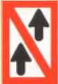
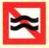
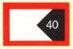
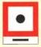
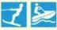

□ Ответственный судоводитель должен быть выбран.
□ Владелец удостоверения на управление спортивным судном должен принять управление судном.
□ Владелец удостоверения на управление спортивным судном должен взять на себя ответственность.
✓ Если вследствие физических или психических недостатков либо вследствие употребления алкогольных напитков или других опьяняющих средств человек не способен безопасно управлять судном, либо если концентрация алкоголя в крови составляет 0,5 ‰ или более.
□ Если вследствие физических или психических недостатков либо вследствие употребления алкогольных напитков или других опьяняющих средств человек не способен безопасно управлять судном, либо если концентрация алкоголя в крови составляет 0,8 ‰ или более.
□ Если вследствие физических или психических недостатков либо вследствие употребления алкогольных напитков или других опьяняющих средств человек не способен безопасно управлять судном, либо если концентрация алкоголя в крови составляет 1,0 ‰ или более.
□ Если вследствие физических или психических недостатков либо вследствие употребления алкогольных напитков или других опьяняющих средств человек не способен безопасно управлять судном, либо если концентрация алкоголя в крови составляет 0,3 ‰ или более.
□ Когда оно не стоит на якоре, не пришвартовано к берегу и имеет ход относительно грунта.
□ Когда оно не сидит на мели, не стоит на якоре и не ограничено в маневрировании.
□ Когда оно не пришвартовано к берегу, не стоит на якоре и имеет ход относительно воды.
✓ Около 1 секунды.
□ Около 2 секунд.
□ Менее 1 секунды.
□ Менее 4 секунд.
□ Около 2–6 секунд.
□ Около 1–2 секунд.
□ Около 4–6 секунд
□ Когда оно оснащено двигателем.
□ Когда под парусом оно не имеет хода относительно воды.
□ Когда под парусом оно не имеет хода относительно грунта.
□ Чёрный конус вершиной вверх.
□ Чёрный ромб.
□ Два чёрных шара вертикально один над другим.
□ Сторона, обращённая от ветра.
□ Сторона справа по ходу движения.
□ Сторона слева по ходу движения.
□ Сторона, обращённая к ветру.
□ Сторона справа по ходу движения.
□ Сторона слева по ходу движения.
□ От восхода до захода солнца и при ограниченной видимости.
□ С 18:00 до 06:00 и при ограниченной видимости.
□ В темноте, при плохой погоде и ограниченной видимости.
□ Они показывают курс и скорость судна.
□ Они показывают направление движения и позицию судна.
□ СОни показывают направление движения и курс судна.
□ Двухцветный фонарь на хорошо видимом месте.
□ Трёхцветный фонарь на хорошо видимом месте.
□ Двухцветный фонарь на или возле вершины мачты.
□ Огни, предписанные для парусного судна.
□ Два красных круговых огня вертикально один над другим.
□ Бортовые огни красный и зелёный и один красный круговой огонь.
□ Каждое судно должно изменить курс влево.
□ Наветренное судно должно уступить дорогу подветренному судну.
□ Подветренное судно должно уступить дорогу наветренному.
□ Судно должно уступить дорогу, если другое судно находится у него по левому борту.
□ Наветренное судно должно уступить дорогу подветренному.
□ Подветренное судно должно уступить дорогу наветренному.
(*-*-*-)
□ Общий сигнал опасности и предупреждения.
□ Якорное судно длиной более 100 м.
□ Буксируемый конвой длиной более 200 м, ограниченный в своих маневренных возможностях.

□ Обгон (Begegnungsverbot) запрещен.
□ Обгон запрещен для транспортных средств длиной менее 20 м.
□ Обгон запрещен для транспортных средств длиной более 20 м.
□ Запрещено расхождение для судов длиной более 12 м.
□ Запрещён обгон; следует ожидать встречное движение.
□ Запрещён обгон для всех судов.

□ Опасный участок берега; опасность подмыва; минимальная дистанция прохода 100 м.
□ Водный путь, по которому можно безопасно проходить в любое время; нет опасности волнения.
□ Водный путь, по которому не всегда можно безопасно проходить; опасность волнения.

□ Максимальная скорость на правой стороне фарватера.
□ Максимальная дистанция в метрах, которую необходимо соблюдать.
□ Сужение фарватера до 40 м.
□ Постоянное закрытие участка водного пути.
□ Предписание подать длинный звуковой сигнал.
□ Дальнейшее движение спортивных судов запрещено.
□ Якорная стоянка запрещена для малых судов менее 12 м./p>
□ Якорная стоянка запрещена для малых судов более 12 м.
□ Запрещено становиться на якорь и швартоваться.

□ Запрещено швартоваться и стоять спортивным судам.
□ Запрещено швартоваться и стоять спортивным судам длиной более 12 м.
□ Запрещено швартоваться и стоять коммерческим судам.

□ Подать один короткий звуковой сигнал.
□ Подать два длинных звуковых сигнала.
□ Подать один короткий и один длинный сигнал.

□ Учебный участок, требующий разрешения, для катания на водных лыжах или гидроциклах.
□ Катание на водных лыжах или гидроциклах разрешено; воднолыжники имеют приоритет.
□ Учебный участок без необходимости разрешения для катания на водных лыжах или гидроциклах.

□ Участок фарватера для парома, который не работает свободно.
□ Пересечение фарватера разрешено.
□ Смена сторон фарватера разрешена.

□ Судоходство для маломерных судов запрещено.
□ Судоходство запрещено, но разрешено для маломерных судов без работающего двигателя.
□ Судоходство запрещено, но разрешено для маломерных судов без работающего двигателя.

□ Объект закрыт навсегда.
□ Сигнал остановки для всех судов.
□ Исключительное препятствие для судоходства.
□ Мост, плотина или шлюз закрыты.
□ Стоп-сигнал для всех судов.
□ Исключительное препятствие для судоходства.
□ Вxod свободен, ворота закрыты.
□ Включена блокировка, проезжайте на въездном светофоре в правильном порядке.
□ Включена блокировка, проезжайте на выездном светофоре в правильном порядке.
□ 15 золотых правил для любителей водных видов спорта.
□ 10 основных правил для любителей водных видов спорта.
□ 15 правил поведения для любителей водных видов спорта.
□ Проявляя экологическую сознательность и соблюдая «Десять основных правил водных видов спорта».
□ Проявляя осмотрительность и соблюдая правила дорожного движения.
□ Управляя транспортным средством с предусмотрительностью и маневрируя в соответствии с правилами дорожного движения.
□ Потому что в этих местах существует риск посадки на мель.
□ Потому что растения могут заблокировать винт.
□ Потому что купающихся в этих местах трудно заметить.
□ Слишком близкое приближение является нарушением основных правил судоходства.
□ Потому что в противном случае оно не сможет избежать столкновения с большим движущимся судном.
□ Его могут ударить носовая или кормовая волна.
□ Потому что уменьшается тяга и волновое воздействие.
□ Потому что компенсируется влияние волн и глубины воды.
□ Потому что увеличивается эффективность руля.
□ Увеличить скорость, чтобы быстрее завершить манёвр расхождения.
□ Судно, идущее против течения, обязано уступить.
□ Судно, идущее по течению, должно остановиться.
□ Более крупное судно может быть сбито с курса течениями, всасыванием или волнами и столкнуться, перевернуться или сесть на мель на мелководье.
□ Меньшее судно может быть сбито с курса течениями, всасыванием или волнами и столкнуться, перевернуться или быть отброшено на очень большое расстояние на мелководье.
□ Более крупное судно может быть сбито с курса волнами и столкнуться, перевернуться или сесть на мель на мелководье.
□ Минимум пятикратная глубина при использовании цепи или трёхкратная при использовании троса.
□ Минимум трёхкратная глубина при использовании цепи или четырёхкратная при использовании троса.
□ Минимум четырёхкратная глубина при использовании цепи или пятикратная при использовании троса.
□ Если якорная цепь или трос не вибрируют и курс по магнитному компасу не меняется.
□ Если при наложении руки на якорную цепь или трос не чувствуется рывков и судно не рыскает на якоре (не швоит).
□ Если при наложении руки на якорную цепь или трос не чувствуется рывков и якорный пеленг изменяется.
□ Угол от 90° до 100°.
□ Максимально тупой угол.
□ Угол от 60° до 70°.
□ Корма уходит на правый борт (штирборд).
□ Курс судна не меняется.
□ Нос уходит на левый борт (бакборд).
□ Автоматический запуск двигателя.
□ Кратковременное прерывание работы двигателя.
□ Автоматический реверс тяги.
□ Проветрить помещения и подождать.
□ Равномерно распределить.
□ Нейтрализовать соответствующим средством.
□ При взгляде с носа на переднем ходу винт вращается по часовой стрелке.
□ При взгляде с кормы на переднем ходу винт вращается против часовой стрелки.
□ При взгляде с носа на заднем ходу винт вращается против часовой стрелки.
□ При взгляде с носа на переднем ходу винт вращается против часовой стрелки.
□ При взгляде с кормы на переднем ходу винт вращается по часовой стрелке.
□ При взгляде с носа на заднем ходу винт вращается по часовой стрелке.
□ Смещение вперед.
□ Смещение назад.
□ Боковое смещение носа.
□ Это помогает при удержании курса.
□ Это помогает при обгоне.
□ Это помогает при расхождении.
□ Правый борт (штирборд) — эффект колеса притягивает судно к причалу.
□ Правый или левый борт в зависимости от положения руля.
□ Рекомендуемой стороны для швартовки нет.
□ Двигатель на холостом ходу, не пользоваться электрическими выключателями, принять меры против перелива топлива, никакого открытого огня.
□ Закрыть окна, не пользоваться электрическими выключателями, принять меры против перелива топлива, никакого открытого огня.
□ Заглушить двигатель, подготовить огнетушитель, принять меры против перелива топлива, никакого открытого огня.
□ За счет струи винта и угла атаки пропеллера.
□ За счет сопротивления винта и угла атаки пропеллера.
□ За счет сопротивления винта и направления пропеллера.
□ Потому что из-за эффекта колеса возникает разрежение у винта.
□ Из-за расстояния между винтом и пером руля.
□ Потому что из-за эффекта колеса возникает разрежение на руле.
□ Выход охлаждающей воды, тахометр, натяжение клинового ремня.
□ Число оборотов винта, температура трансмиссионного масла, давление масла.
□ Давление впрыскивающего насоса, помпа импеллера, масляный насос.
□ Слишком много моторного масла, неисправна помпа импеллера, закрыт кингстон, слишком низкий уровень охлаждающей воды.
□ Неисправен термостат, неисправна помпа импеллера, закрыт кингстон, слишком высокое напряжение аккумулятора.
□ Неисправен термостат, неисправная муфта сцепления, закрыт кингстон, слишком низкий уровень охлаждающей воды.
□ Слишком высокие обороты двигателя.
□ Обрыв клинового ремня и высокое потребление тока.
□ Стартер вышел из строя после запуска.
□ Слишком много масла в двигателе.
□ Неисправен масляный выключатель (датчик).
□ Слишком высокие обороты двигателя.
□ Заблокирована подача топлива.
□ Загрязнен масляный фильтр.
□ Загрязнен воздушный фильтр.
□ Форсунки слишком большие или слишком маленькие.
□ Крышка бака открыта.
□ Ослаблен винт на валу.
□ Залить топливо до полного бака для предотвращения коррозии.
□ Вытянуть чеку (Quickstopp), чтобы не потерять ключ.
□ Оставить топливный кран открытым для лучшей вентиляции.
□ Избыток воздуха в воздушно-топливной смеси; повышенная доля масла в смеси для двухтактных двигателей.
□ Нормальная воздушно-топливная смесь; нормальное соотношение смеси для двухтактных двигателей.
□ Избыток воздуха в воздушно-топливной смеси; пониженная доля масла в смеси для двухтактных двигателей.
□ Заполнить топливные и водяные баки и зарядить бортовую сеть.
□ Закрыть расходный бак и слить воду из топливного фильтра.
□ Оставить судно в мореходном состоянии и известить капитана порта.
□ Сохранять скорость, чтобы исключить тягу и волнение за счет режима глиссирования.
□ Снизить скорость и, при необходимости, отклониться от правила правостороннего движения.
□ Остановиться напротив пришвартованных судов и убедиться, что никто не обременен и не пострадал.
□ По возможности внизу в корпусе судна, в защищенном от солнца месте, в специальном отсеке с отверстием наружу на уровне пола.
□ По возможности на баке, в защищенном от солнца месте, в специальном отсеке с отверстием наружу на уровне пола.
□ По возможности на палубе, в защищенном от солнца месте, в специальном отсеке с вентиляцией в верхней части.
□ Оба газа легче воздуха и образуют с воздухом взрывоопасную смесь.
□ Оба газа тяжелее воды и образуют с водой взрывоопасную смесь.
□ Оба газа тяжелее воздуха и образуют с водой взрывоопасную смесь.
□ Опорожнить газопровод и обеспечить проветривание. Кроме того, не трогать электровыключатели и не пользоваться телефонами.
□ Перекрыть подачу газа и обеспечить проветривание. Кроме того, не трогать выключатели и вызвать помощь по телефону.
□ Опорожнить газопровод, проверить отсутствие газа зажигалкой и запросить помощь по радио или мобильному телефону.
□ Установка должна быть принята, ввод в эксплуатацию может осуществлять только специально аттестованное лицо.
□ Установка должна быть принята и проверяться ежегодно. Ввод в эксплуатацию только аттестованным лицом.
□ Приемка установки должна быть проведена не более трех лет назад. Главный кран и запорные клапаны должны быть открыты.
□ Система должна быть очищена от газа.
□ Утилизировать газовый баллон надлежащим образом.
□ Баллон со сжиженным газом должен быть полностью опорожнен.
□ Ежегодно и после каждого использования или учебного применения.
□ В соответствии с указаниями производителя, не реже одного раза в 3 года.
□ Ежегодно, перед началом водноспортивного сезона.
□ Пенный огнетушитель, не реже одного раза в год.
□ Углекислотный (CO2) огнетушитель, не реже одного раза в два года.
□ Порошковый (ABC) огнетушитель, не реже одного раза в год.
□ Обеспечить отвод дыма и вовремя использовать огнетушитель, направляя струю по возможности в центр пламени.
□ Ограничить доступ воздуха и использовать огнетушитель экономными прерывистыми порциями, туша огонь по возможности сверху.
□ Прочитать инструкцию и немедленно использовать огнетушитель, туша огонь по возможности снизу.
□ Оказать помощь, оставаться на месте до окончания необходимости в содействии; известить водную полицию.
□ Оказать помощь, оставаться на месте; подать сигнал бедствия.
□ Оказать помощь, оставаться на месте; обеспечить герметичность судна (задраить люки).
□ Изменение давления, солнечная радиация и высота над уровнем моря.
□ Изменение давления, влажность воздуха и время года.
□ Изменение давления, время суток и температура.
□ Когда существует опасность для жизни людей или судно больше не может безопасно маневрировать.
□ Когда существует опасность для жизни людей или значительных материальных ценностей и требуется помощь.
□ Когда существует опасность для жизни людей, материальных ценностей или морской среды.